마지막 단계의 화면. 스포트라이트 직접광 PBR, 2048² 그림자 맵, 3×3 PCF. 선형 조명 결과를 sRGB 변환 없이 출력하고 환경광이 없어서, 어둡게 보이고 그림자가 완전히 검음(9쪽 한계).
프레임별 명령 할당자·펜스·상수 버퍼를 몇 벌 두고 언제 다시 쓸지 정하고, Cook-Torrance 직접광 BRDF와 스포트라이트 그림자 맵(광원 행렬, 배리어, 가림 판정, PCF)의 핵심 로직을 작성한 작은 DX12 렌더러.
홍정모 그래픽스 강의 Part 1·2(DX11)를 마친 뒤, Part 3에서 배울 기능을 DX12로 옮기며 만들었음. DX11에서 런타임이 대신하던 프레임 동기화, 상수 메모리, 자원 상태 전환을 직접 다루는 것이 목표였음. 삼각형 하나에서 시작해 직접광 PBR과 그림자까지 간 과정을 날짜순으로 적음.
코딩 에이전트(Claude Code, Codex)와 함께 만들었음. 주요 설계 판단과 11/17 이후의 핵심 로직은 내가, 나머지 구현과 통합은 에이전트가 맡았음. 자세한 분담은 9쪽에 있음.
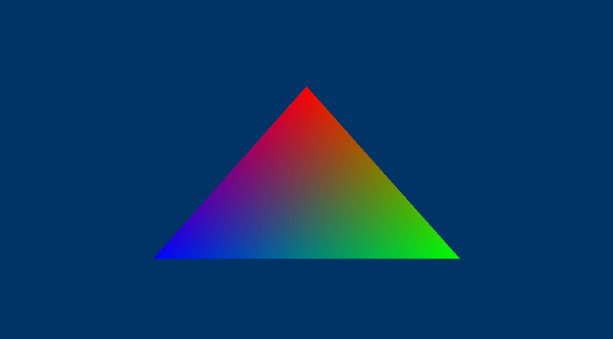
1 · Hello Triangle11/10–12 · 2쪽
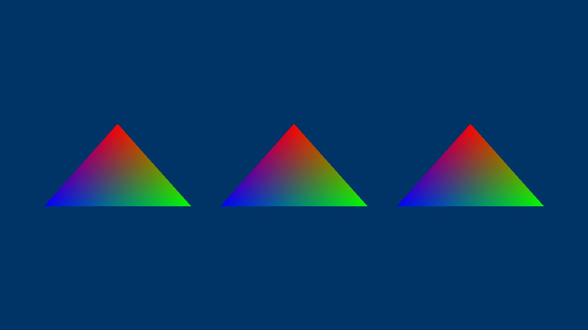
2 · 프레임 2개, 드로우별 상수11/13–14 · 2쪽
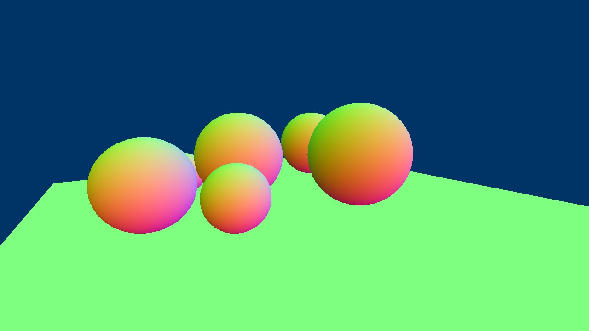
3 · 깊이 버퍼11/13 · 3쪽
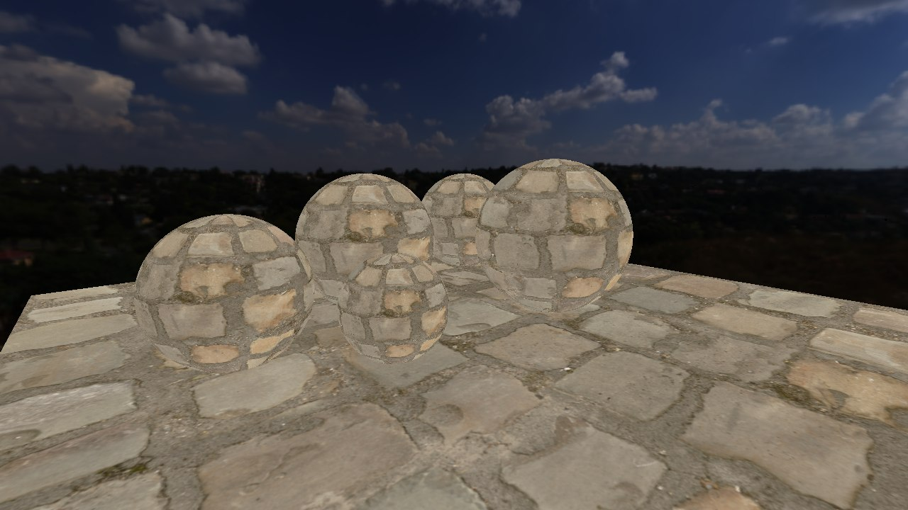
4 · 텍스처, 디스크립터, 하늘11/13–14 · 3쪽
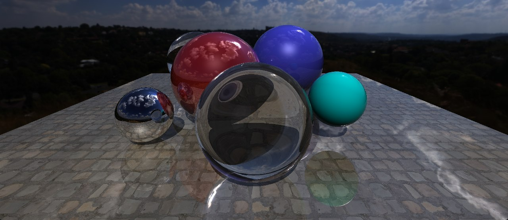
5 · 레이 씬11/14–15 · 4쪽
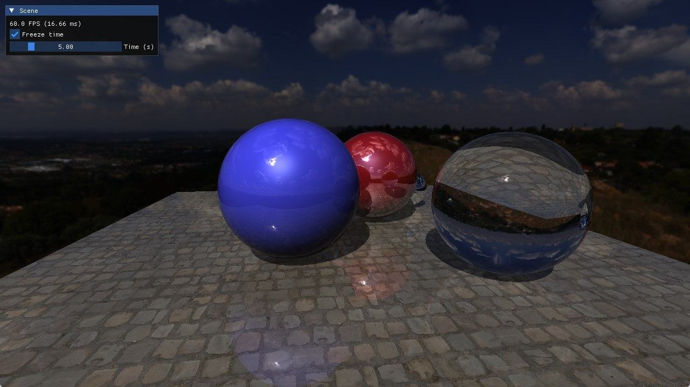
6 · ImGui, 1인칭 카메라11/16 · 4쪽
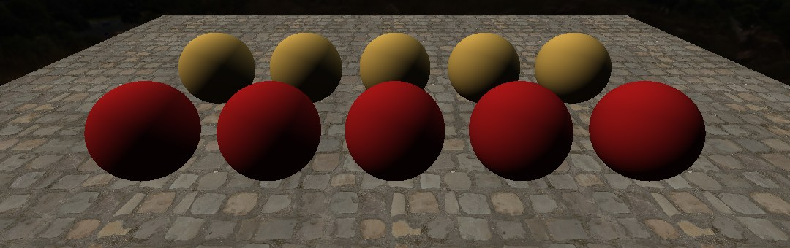
7 · 구 격자와 재질 배치11/16 · 5쪽
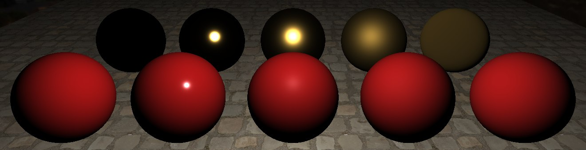
8 · 직접광 PBR11/17–18 · 6쪽
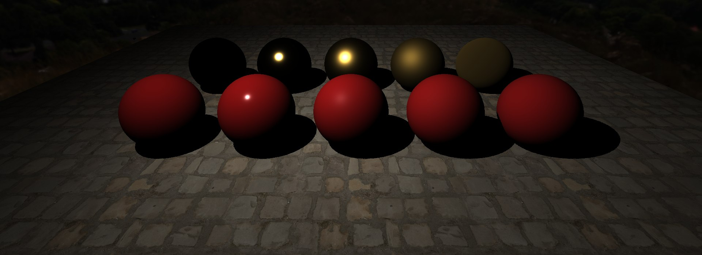
9 · 스포트라이트 그림자11/18–19 · 7쪽
10 · PCF와 해상도 비교11/19 · 8쪽
만든 것
프레임 2개 동시 진행, 프레임별 상수 선형 할당, 텍스처 업로드, 디스크립터 테이블, 패스별 PSO, 깊이 버퍼, 1인칭 쿼터니언 카메라, 직접광 PBR과 항별 디버그 뷰, 스포트라이트 그림자 맵, 3×3 PCF.
하지 않은 것
리사이즈(1920×1080 고정), 감마 보정·HDR·톤 매핑, IBL, 밉맵, 노멀 매핑, 모델 파일 로딩.
에이전트가 구현한 Hello Triangle 코드로 DX12의 한 프레임을 학습함. 코드를 보지 않고 한 프레임을 처음부터 끝까지 설명하는 확인까지 마침.
Hello Triangle. 첫 커밋을 다시 빌드해 찍음.
기록할 때 읽는 것(RTV 칸의 내용, 정점 버퍼 뷰)과 GPU가 실행할 때 읽는 것(할당자 메모리, 정점·상수 데이터, 셰이더가 읽는 디스크립터)을 구분함. 이 구분이 이후 "무엇을 프레임마다 따로 둘까"의 기준이 됨.
한 프레임 (첫 커밋, 요약)
allocator->Reset(); // 명령 메모리 재사용
list->Reset(allocator, pso);
Transition(backBuffer, PRESENT, RENDER_TARGET);
list->ClearRenderTargetView(rtv, color, 0, nullptr);
list->OMSetRenderTargets(1, &rtv, FALSE, nullptr);
list->DrawInstanced(3, 1, 0, 0);
Transition(backBuffer, RENDER_TARGET, PRESENT);
list->Close();
queue->ExecuteCommandLists(1, lists);
swapChain->Present(1, 0);
WaitForGpu();// Signal 후 완료까지 대기
매 프레임 끝에서 GPU가 다 끝날 때까지 기다리므로 한 번에 한 프레임만 진행됨. 주석은 설명용으로 새로 씀.
단계 2 · 11/13–14
프레임 2개 동시 진행과 드로우별 상수
프레임 끝의 대기를 없애고 프레임 2개가 동시에 진행되게 함. 같은 삼각형을 드로우별 상수(b0)만 바꿔 세 번 그림.
프레임별
명령 할당자, 그 프레임이 기다릴 펜스 값, 상수 버퍼. CPU가 쓰고 GPU가 나중에 읽기 때문.
하나만
큐, 커맨드 리스트, 펜스. 리스트는 명령을 할당자에 쓰므로 제출 직후 다른 할당자로 Reset할 수 있음. 펜스는 계속 커지는 숫자라 하나로 모든 프레임을 구분함.
상수
처음에는 프레임마다 업로드 버퍼 하나를 256바이트 칸으로 나눠 i번 드로우는 i번 칸에 씀. 크기가 다른 장면 상수(336바이트)가 섞이면서, 지금까지 쓴 바이트 수로 다음 위치를 정하고 256바이트 배수로 올리는 선형 할당으로 바꿈. b0는 루트 CBV로 넘김.
버린 안
디스크립터 테이블로 CBV 넘기기. 드로우마다 뷰를 만들고 그 칸의 수명까지 관리해야 함.
DX11에서 Map(WRITE_DISCARD) 때 드라이버가 새 메모리를 주던 일을 앱이 맡음. 선형 할당의 오프셋은 그 프레임의 펜스 대기 뒤에만 0으로 되돌림. 임시 계측으로 프레임 시작 때 진행 중인 프레임 수를 세니 324프레임 중 320프레임에서 2개였음(vsync).
같은 정점 버퍼를 드로우마다 다른 b0로 세 번 그림.
현재 Render() 앞뒤 (요약)
// 시작: 이 칸을 마지막으로 쓴 제출만 기다림
FrameResource &frame = m_frames[m_frameIndex];
WaitForFenceValue(frame.fenceValue);
frame.ResetConstants();
frame.commandAllocator->Reset();
// ... 기록, 제출, Present ...// 끝: 기다리지 않고 제출 번호만 기억frame.fenceValue = Signal();
m_frameIndex = (m_frameIndex + 1) % kFrameCount;
처음 생각 → 바로잡은 것
처음에는 "직전 프레임을 기다린다"고 생각했음. 같은 칸을 마지막으로 쓴 것은 두 프레임 전이라 그 펜스 값까지만 기다림. 프레임 끝의 Signal은 기다리는 것이 아니라, 이 칸을 다시 쓸 때 기다릴 펜스 값을 남기는 것임.
DX12 렌더러 학습 기록3 / 9
단계 3 · 11/13
3D 장면과 깊이 버퍼
Part 2 예제의 배치대로 구 6개와 바닥을 그리고 노멀을 색으로 출력함. 깊이 버퍼 없이 먼저 그려 본 뒤 깊이 버퍼를 붙임.
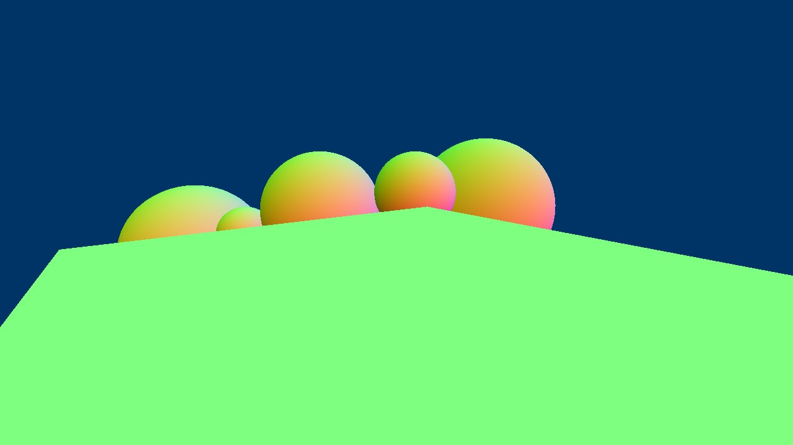
깊이 버퍼 없음. 마지막에 그린 바닥이 구를 덮음.깊이 버퍼 추가.
고른 안
깊이 버퍼는 엔진에 하나. GPU만 읽고 쓰고, 프레임들은 한 큐에서 차례로 실행됨. CPU가 쓰고 GPU가 나중에 읽는 상수 버퍼와 다른 점.
버린 안
프레임별 두 벌.
DEPTH_WRITE 상태로 만들어 그대로 두므로 배리어가 없음. 9단계 그림자 맵에서 같은 판단을 다시 씀.
DirectXTex로는 파일을 CPU 이미지로 읽기까지만 하고, 업로드·복사·상태 전환은 엔진 코드에서 다루는 방식을 고름.
COPY_DEST로 생성 → 업로드 버퍼에 행 간격을 256바이트에 맞춰 복사 → CopyTextureRegion → COPY_DEST에서 PIXEL_SHADER_RESOURCE로 배리어 → 제출 → 펜스 대기 → 업로드 버퍼 해제.
디스크립터
SRV 칸은 초기화 때 한 번 쓰고 읽기만 하므로 프레임별로 나누지 않음. 세 장을 연속 칸에 두고 테이블 하나로 묶음. 샘플러는 정적 샘플러.
하늘
고른 안
맨 먼저 깊이 테스트와 쓰기 없이 그림. 앞면을 버려 같은 구 메시를 안쪽에서 봄.
버린 안
맨 마지막에 깊이 테스트로 그리기. 깊이를 1로 고정하지 않고 반지름 10인 구를 그대로 쓰면, 12보다 멀리 있는 바닥 모서리를 하늘이 가림.
깊이 상태와 컬링이 달라 PSO를 따로 둠.
하늘 패스 추가. 확인용 PS가 모든 메시에 바닥 텍스처를 입힘.
DX12 렌더러 학습 기록4 / 9
단계 5 · 11/14–15
레이 씬: 기반 기능을 한 장면에서 검증
Part 2에서 DX11로 실습한 레이 트레이싱 장면을 DX12로 옮김. 업로드, 디스크립터 테이블, 상수 할당, PSO를 한 장면에서 모두 거치고, Part 2 실행 화면을 정답으로 비교할 수 있어서 첫 목표로 정함.
11/15 결과. 원본 장면은 modern_shinobi의 Shadertoy fsGcW3(shadertoy.com/view/fsGcW3)이고, 홍정모 그래픽스 Part 2 예제를 거쳐 옮김. 셰이더 코드는 싣지 않음.
래스터가 1차 교차(카메라 광선)를 맡고, 픽셀 셰이더는 그림자·반사·굴절 광선만 추적함.
셰이더를 통째로 가져오지 않고 단계별로 다시 구현함. 재질 색 → 로컬 셰이딩 → 그림자 광선 → 반사와 Fresnel → 광선 스택과 굴절. 단계마다 식과 구조는 질의응답으로 정하고 구현은 에이전트가 함.
재귀 대신 반사·굴절 비율을 미리 곱한 광선 스택을 씀. 깊이 우선이라 최대 깊이 + 1칸이면 충분함.
Part 2의 DX11 프로그램은 카메라와 해가 시간에 따라 움직여서, 두 프로그램을 같은 장면 시간(2, 5, 8초)에 멈춰 찍고 비교함. 구의 가림, 반사·굴절에 비친 위치, 그림자 방향이 같았음. 다른 점 둘(유리 구도 그림자를 드리움, 그림자 안 햇빛 0)은 의도한 단순화.
단계 6 · 11/16
ImGui와 1인칭 카메라
ImGui 창을 붙이고, 궤도 카메라를 언리얼 에디터 뷰포트처럼 움직이는 1인칭 카메라로 바꿈.
ImGui: 셰이더 가시 힙을 4칸으로 늘려 폰트 SRV를 3번 칸에 둠. 0~2번 텍스처 칸은 그대로라 테이블 설정이 바뀌지 않음. ImGui 백엔드는 자기 PSO와 루트 시그니처를 묶어서 장면 뒤 맨 마지막에 그림.
고른 안
yaw, pitch 두 각도로 저장하고 매 프레임 쿼터니언으로 회전을 만듦. 이 카메라는 roll을 두지 않음.
버린 안
카메라 자기 축으로 쿼터니언을 누적(트랙볼 방식). 원을 그리면 회전이 교환되지 않아 시선 축 회전이 쌓이고 지평선이 기울어짐.
버린 안
행렬만 쓰기. 화면은 같지만 쿼터니언을 직접 써 보려고 택하지 않음.
뷰 행렬은 카메라 모델 행렬 R(q)·T(p)(DirectXMath 행 벡터 기준)의 역이라 곱 순서가 뒤집혀 T(−p)·R(q*)가 됨. 단위 쿼터니언의 역회전은 벡터 부분의 부호만 뒤집은 켤레 q*임. 처음에는 축별 쿼터니언을 반대 각도로 다시 만들자고 생각했음.
확인: 같은 위치와 방향에서 기존 XMMatrixLookAtLH 화면과 쿼터니언 뷰 화면이 같음. 커서를 200픽셀 옮기면 yaw가 34.4°(200 × 0.003 rad) 돌고 지평선은 수평을 유지함.
// b0: 드로우마다struct MeshConstants {
XMFLOAT4X4 model, invTranspose,
view, projection;
Material material;// 이 표면의 재질
};
// b1: 프레임마다, 모든 드로우가 공유struct SceneConstants {
XMFLOAT3 eyeWorld;
XMFLOAT3 lightDirection;
};
src/ConstantBuffers.h 발췌. 행렬 선언을 묶고 padding과 바닥 교차 정보는 뺌.
처음 생각 → 바로잡은 것
처음에는 "반사가 있으니 b1에 모아야 한다"고 생각했음. 레이 씬의 반사 광선과 래스터 PBR의 반사를 구분하고 나서 b0로 정함.
DX12 렌더러 학습 기록6 / 9
단계 8 · 11/17–18
직접광 PBR과 항별 확인
점광원 하나의 직접광을 Cook-Torrance BRDF로 계산함. 에이전트가 BRDF 식을 비워 둔 틀을 만들고 내가 식을 채움.
L = ( kD · albedo / π + D·F·G / (4 (n·l)(n·v)) ) · E · (n·l)
F는 Schlick(v·h, F0 = lerp(0.04, albedo, metallic)), D는 GGX(α = roughness²), G는 Smith Schlick-GGX(k = (roughness + 1)² / 8), kD = (1 − F)(1 − metallic). E는 빛을 수직으로 받는 면의 irradiance.
π 관례
BRDF에 Lambert의 1/π를 남기고 광원 값을 irradiance로 둠. 기본 세기 π에서 빛을 정면으로 받는 흰 Lambert 면이 감쇠 전 albedo 그대로 보임.
버린 안
강의 예제처럼 diffuse에서만 1/π를 빼기. specular는 그대로라 두 항의 비율이 π만큼 달라짐.
확인 방법
항마다 디버그 뷰를 두고 화면 값으로 확인함. roughness 1 구의 D는 1/π라 약 81/255, 비금속의 F는 약 0.04라 약 10/255.
버린 안
강의 예제의 정답 화면과 나란히 비교. π 관례와 HDR·감마 후처리가 달라 같은 화면이 나오지 않음. 항별 확인은 어느 항이 틀렸는지까지 알려 줌.
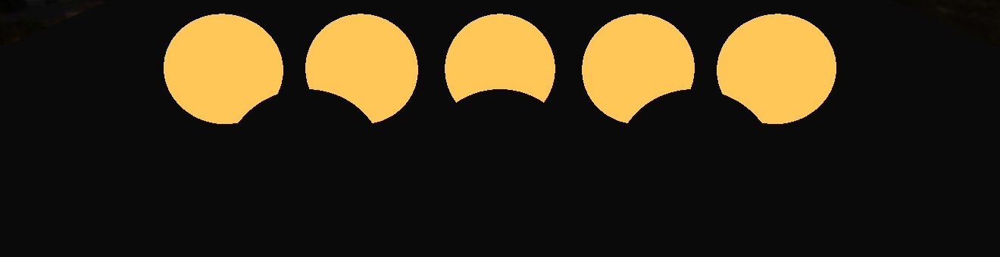
1 · Fresnel F. 비금속은 F0 = 0.04에 가까워 어둡고, 금속은 F0가 base color라 금색.
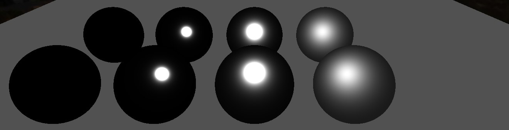
2 · GGX D. roughness 0.25의 작은 점이 거칠수록 퍼짐. 맨 오른쪽은 1/π.
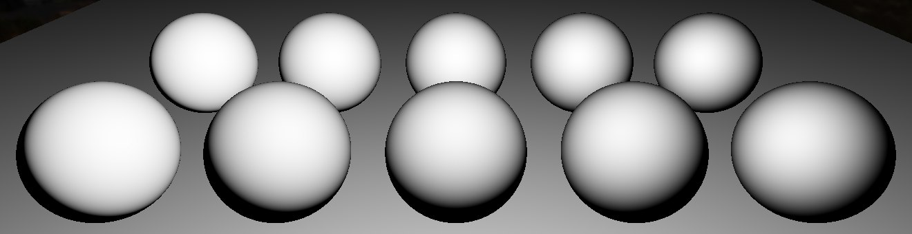
3 · Smith G. 빛이나 시선이 표면을 스칠수록 작아져 경계가 어두움.
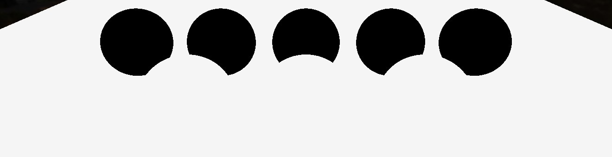
4 · kD. 금속은 1 − metallic이 0이라 검음.
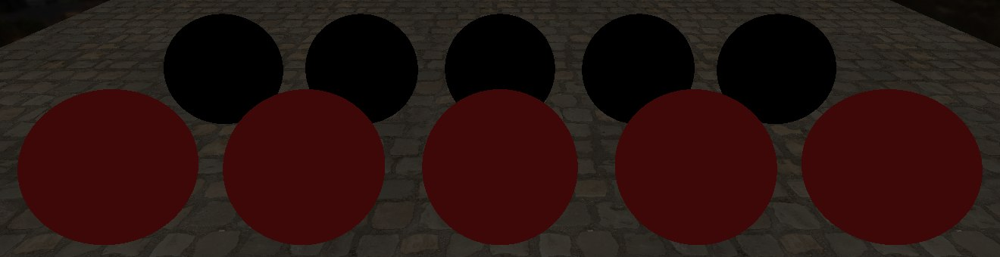
5 · 확산 BRDF. albedo / π가 곱해져 색과 바닥 텍스처가 드러남.
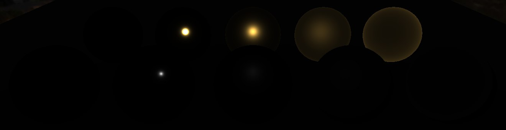
6 · 정반사 BRDF. 금속의 하이라이트가 거칠수록 넓고 어두워짐.
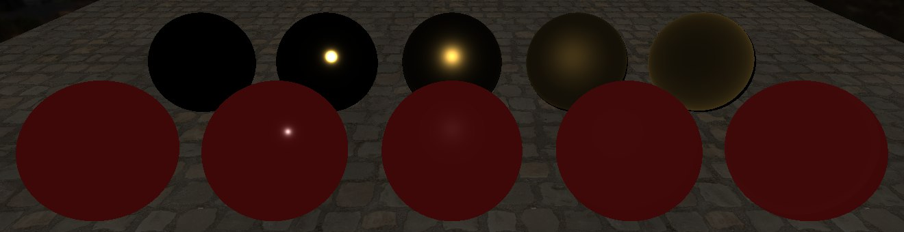
7 · BRDF 합. 반사 비율일 뿐이라 빛의 양이 없어 평평함.0 · 최종. × irradiance × n·l. 광원 쪽이 밝고 아래 경계가 검음.
점광원 (0, 2, 3), 세기 π. 앞줄 비금속, 뒷줄 금속, 왼쪽부터 roughness 0 → 1. 디버그 뷰는 광원 값과 n·l을 곱하기 전이고 1을 넘으면 흰색으로 잘림. roughness 0 구는 이 구현에서 D가 0이 되어(0/0을 막으려고 분모에 작은 값을 더함) 점광원 하이라이트가 없고, 금속은 확산도 0이라 검게 보임.
처음 생각 → 바로잡은 것
처음 채운 DirectLighting은 BRDF를 그대로 돌려줘서 화면이 7번 뷰와 같았음. 반사율 방정식에서 점광원 하나만 남기면 BRDF에 들어오는 빛(irradiance)과 n·l을 곱해야 함.
DX12 렌더러 학습 기록7 / 9
단계 9 · 11/18–19
스포트라이트 그림자 맵
강의 Part 3의 DX11 스포트라이트 그림자 예제를 기준으로 구 격자 장면에 그림자를 넣음. 에이전트가 API 호출 뼈대를 두고 비워 둔 판단 자리(광원 행렬, DSV·SRV의 형식과 자원, 그림자 PSO와 패스, 배리어 두 개, 가림 판정)를 내가 채움.
2048² 그림자 맵, 한 텍셀 비교(PCF 전). 광원은 왼쪽 앞 위 (−2, 4, 2.5)에서 격자 가운데를 겨눔.
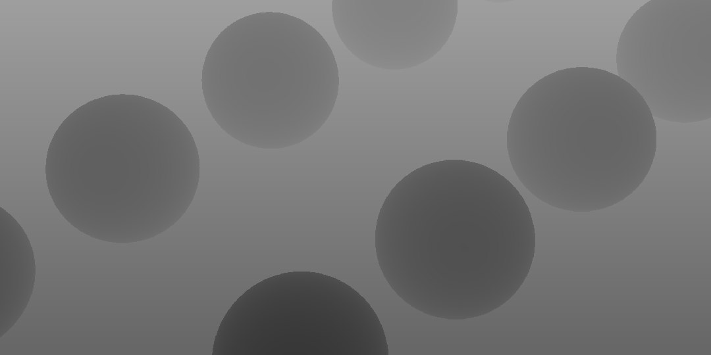
FOV 45°일 때 광원에서 본 그림자 맵 깊이(가까울수록 어두움). 가장자리 구가 맵 밖으로 잘림.
광원
스포트라이트. 그림자 맵 한 장은 투영 하나로 장면을 담음. 점광원은 큐브 6면, 방향광은 직교 투영이 필요함.
자원
그림자 맵 한 장(R32_TYPELESS)에 뷰 두 개를 초기화 때 만들어 둠. 그림자 패스는 DSV(D32_FLOAT)로 깊이를 쓰고, 메인 패스는 SRV(R32_FLOAT)로 읽음. 광원이 움직여도 뷰는 그대로이고, 바뀌는 광원 행렬만 프레임별 b1로 넘김. 깊이 버퍼처럼 프레임별로 나누지 않음.
상태
프레임 경계에서는 늘 DEPTH_WRITE. 그림자 패스 뒤 PIXEL_SHADER_RESOURCE로 바꾸고 Close() 전에 되돌림. 백버퍼의 PRESENT와 같은 약속.
FOV 70°
45°에서 구 3개가 맵 밖으로 잘림. 광원 뷰 공간에서 구마다 필요한 반각을 계산하니 최소 약 61°(뒷줄 왼쪽 구). 광원을 옮길 여유를 두어 70°로 정함. 강의 예제의 120°는 같은 해상도에서 텍셀 한 변이 약 2.5배(면적은 약 6배) 커짐. 그림자 진 바닥은 광원에서 보면 구 뒤에 가려지므로, 그림자를 드리우는 구만 맵 안에 들면 됨.
src/Engine.cpp, Render() 요약 (상태 이름의 D3D12_RESOURCE_STATE_ 접두어 생략)
// 1. 그림자 패스: 렌더 타깃 없이 광원 시점의 깊이만 씀
list->ClearDepthStencilView(shadowDsv, D3D12_CLEAR_FLAG_DEPTH, 1.0f, 0, 0, nullptr);
list->OMSetRenderTargets(0, nullptr, FALSE, &shadowDsv);
DrawScene(frame, lightView, lightProjection);
Transition(m_shadowMap.Get(), DEPTH_WRITE, PIXEL_SHADER_RESOURCE);// 2. 메인 패스: 하늘 → 구 격자와 바닥(메시 PS가 t3으로 그림자 맵을 읽음) → ImGui
Transition(backBuffer, PRESENT, RENDER_TARGET);
DrawScene(frame, view, projection);
// 프레임 끝: 다음 프레임의 출발 상태로 되돌림. 배리어도 기록하는 명령이라 Close() 전
Transition(backBuffer, RENDER_TARGET, PRESENT);
Transition(m_shadowMap.Get(), PIXEL_SHADER_RESOURCE, DEPTH_WRITE);
list->Close();
남은 것: 구의 명암 경계(n·l ≈ 0)를 따라 acne 띠가 있음. 그곳은 n·l이 0에 가까워 최종 화면에서는 거의 보이지 않음.
DX12 렌더러 학습 기록8 / 9
단계 10 · 11/19
PCF와 그림자 맵 해상도 비교
그림자 경계를 부드럽게 하려고 고정 3×3 PCF를 넣고, 그림자 맵 해상도와 깊이 bias에 따라 화질이 어떻게 달라지는지 비교함. 비교 샘플러와 3×3 커널은 내가 채움.
PCF 전후
PCF 전 · 한 텍셀 비교
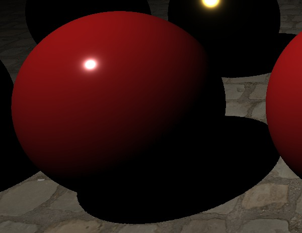
3×3 PCF
Shadow factor, 바닥 경계 3배 확대
Shadow factor, 바닥 경계 3배 확대
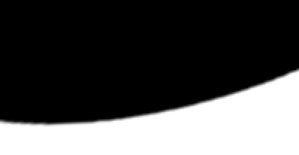
2048², bias 1e-4, 같은 카메라와 광원. 한 텍셀 비교는 경계가 계단처럼 바뀌고, 3×3 PCF는 선형 비교 샘플 9개의 평균이라 좁은 회색 전이가 생김. Shadow factor는 빛을 받으면 흰색, 가려지면 검정.
해상도 × 깊이 bias
2048² · bias 1e-4
256² · bias 1e-4
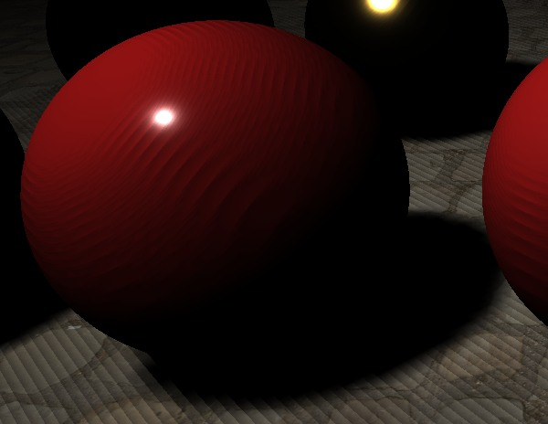
2048² · bias 1e-3
256² · bias 1e-3
3×3 PCF, 구를 가까이 본 같은 카메라. 256²에서 bias 1e-4는 구와 바닥에 굵은 줄무늬(shadow acne)가 생기고, 1e-3으로 키우면 대부분 줄어듦. 256²는 텍셀 한 변이 2048²의 8배라 3×3 PCF가 바닥에서 덮는 폭도 넓어서, 그림자 경계가 더 넓게 번져 부드러워 보임. 광원 크기를 반영한 반그림자는 아님.
shaders/MeshPixelShader.hlsl, ShadowFactor() 끝부분
// 같은 표면이 정밀도 오차로 자기를 가리지 않도록 기준 깊이를 당김
float compareDepth = posDepth - 1e-4f;
uint width, height;
shadowMap.GetDimensions(width, height);
float2 texelSize = 1.0f / float2(width, height);
float shadowFactorSum = 0.0f;
for (int i = 0; i < 9; i++) // offsets: (-1,-1) ~ (1,1)
{
float2 sampleUV = uv + texelSize * offsets[i];
shadowFactorSum += shadowMap.SampleCmpLevelZero(shadowCompareSampler, sampleUV, compareDepth);
}
return shadowFactorSum / 9.0f;
DX12 렌더러 학습 기록9 / 9
정리
작업 방식, 분담, 한계
분담
시기
내가 한 것
에이전트가 한 것
11/10–12 · 단계 1
한 프레임 흐름 학습, 코드 없이 설명하는 확인
Hello Triangle 구현
11/13–16 · 단계 2~7
자원을 몇 벌 둘지, 배리어 위치, 디스크립터 배치, 장면 구성 같은 주요 설계를 질의응답으로 결정
구현과 통합, 빌드와 실행 확인. 레이 씬 셰이더 구현, 카메라 입력 방식, 텍스처 자산 준비